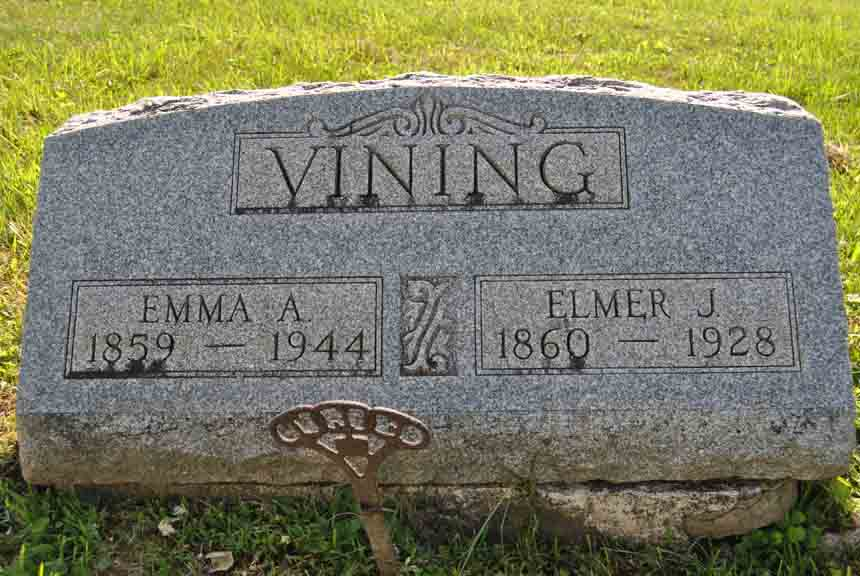
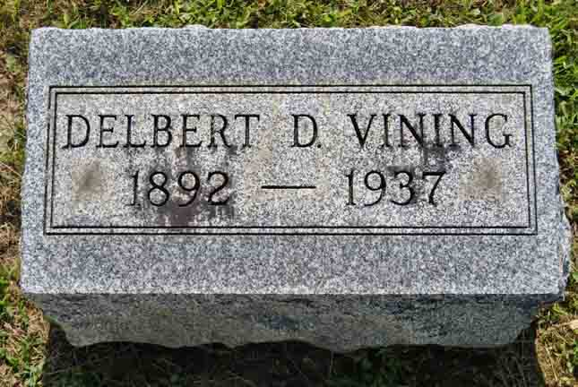

Documentation for Elmer John Vining - Emma A. Steward
Census Data
| |
1900 |
1900 |
1910 |
1920 |
1930 |
1940 |
| Elmer John Vining |
? |
40 |
50 |
60 |
dead |
|
| Emma A. (Steward) Vining |
? |
41 |
50 |
61 |
70 |
82
[see note below] |
| child Vining |
? |
dead |
|
|
|
|
| Delbert D. Vining |
? |
8 |
18 |
28 |
38 |
dead |
1900 Porter Township, Delaware County, Ohio - dwelling 50, family 52:

1910 Porter Township, Delaware County, Ohio - dwelling 137, family 137:

1920 Porter Township, Delaware County, Ohio - dwelling 123, family 112. Also living in this household in 1920 was servant Mae Davis (29 y., b. Ohio).

1930 Bennington Township, Morrow County, Ohio - dwelling 16, family 18. Also living in this household in 1930 was lodger Mae Davis (38 y., b. Ohio).

1940 Sunbury, Berkshire Township, Delaware County, Ohio. In 1940, Emma A. (Steward) Vining was living in a “rest home”.


Death Data
Headstone for Elmer John Vining and Emma A. (Steward) Vining, in Fargo Methodist Episcopal Cemetery, Marengo, Morrow County, Ohio (from Find A Grave):

Headstone for Delbert D. Vining, son of Elmer John Vining and Emma A. (Steward) Vining, in Fargo Methodist Episcopal Cemetery, Marengo, Morrow County, Ohio (from Find A Grave):
